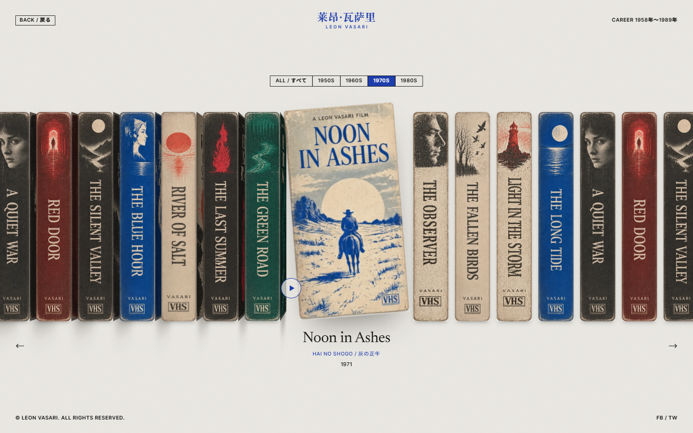

01 / Filmography · Interactive
Leon Vasari
A shelf of fictional films on VHS. Pull out a tape, turn its cover, and open the story behind it.
HTML / CSS / JS2026
A home for interfaces worth opening, exploring, and learning from.
01 / 01

01 / Filmography · Interactive
A shelf of fictional films on VHS. Pull out a tape, turn its cover, and open the story behind it.